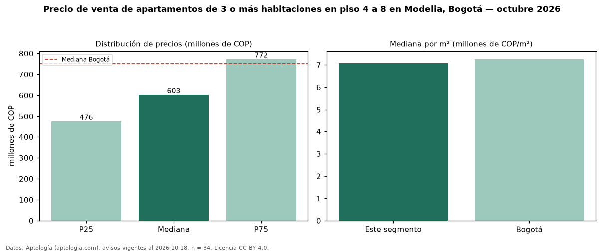

Precio de venta de apartamentos de 3 o más habitaciones en piso 4 a 8 en Modelia, Bogotá — octubre 2026
COP 603 millones es el precio mediano de apartamentos de 3 o más habitaciones en piso 4 a 8 en venta en Modelia (localidad de Fontibón), Bogotá (n = 34 avisos). Frente a la mediana de los apartamentos de 3 o más habitaciones en venta de Modelia (COP 574 millones, n = 90), queda 5 % por encima; este segmento reúne el 38 % de esos avisos. Por metro cuadrado, la mediana es COP 7,07 millones/m² (n = 34), 6 % por encima de los apartamentos de 3 o más habitaciones en venta de Modelia (COP 6,69 millones/m²). El área mediana anunciada es 77 m². La administración mediana declarada es COP 442.000 al mes (n = 29). El estrato más frecuente es 4 (91 % de los avisos con estrato). La mediana de todos los apartamentos en venta de Bogotá es COP 750 millones (−20 % de diferencia). La mitad central de los avisos va de COP 476 millones a COP 772 millones (razón 1,6), una dispersión moderada. Datos: Aptología (aptologia.com), CC BY 4.0 — https://www.aptologia.com/venta/bogota/modelia. Archivos: PDF, CSV con las cifras y gráfica PNG.

| Avisos únicos | 34 |
|---|---|
| Percentil 25 | COP 476.250.000 |
| Mediana | COP 603.000.000 |
| Percentil 75 | COP 772.500.000 |
| Mediana por m² | COP 7.074.768 |
Fuente: avisos vigentes de portales inmobiliarios recopilados por Aptología, deduplicados (mínimo 30 avisos únicos por celda). Precios pedidos, no cerrados. Fecha: 2026-10-18.